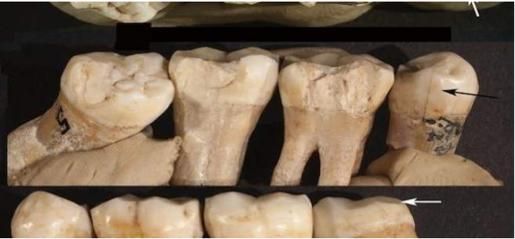
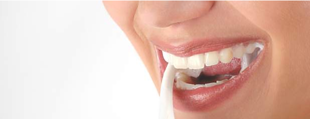
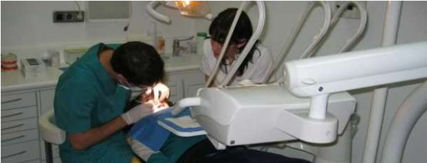
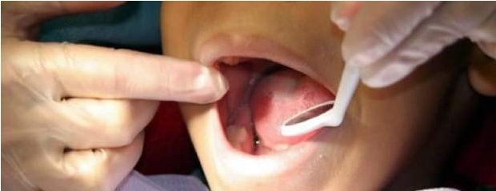

Home
Agendar cita
Buscar Pacientes
Calendario
Registro de Paciente
Sign Out

Los Neanderthales iban al 'dentista', según revela una evidencia de odontología prehistórica

Alertan de que la blancorexia u obsesión por los dientes blancos puede provocar su pérdida

La Justicia francesa condena a ocho años de cárcel al "dentista del horror" por prácticas ilegales

El consumo de zumos elaborados provoca caries en los menores, advierten dentistas granadinos